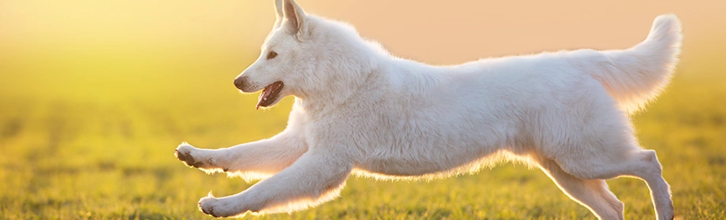

Как воспитать щенка: первые шаги
Появление щенка в доме — это не только море умиления, но и круглосуточный труд. Первые месяцы жизни малыша формируют его характер и привычки на всю оставшуюся жизнь. Чтобы вырастить послушную и преданную собаку, уделите максимум внимания трем главным аспектам.
- Приучение к туалету и пеленке: У щенков ускоренный метаболизм, поэтому высаживать малыша на пеленку нужно после каждого сна, игры или еды. Никогда не ругайте и не наказывайте щенка за «промахи» — он не поймет вашей злости, но начнет вас бояться. Вместо этого бурно хвалите и угощайте лакомством каждый раз, когда он сделал свои дела в правильном месте.
- Социализация — ключ к адекватности: Как только закончится карантин после прививок, начинайте активно знакомить щенка с внешним миром. Показывайте ему оживленные улицы, разрешайте общаться с дружелюбными собаками, знакомьте с новыми людьми, звуками транспорта и велосипедами. Чем больше позитивного опыта он получит сейчас, тем меньше страхов и агрессии у него будет во взрослом возрасте.
- Запрет на укусы и порчу вещей: Щенки исследуют мир зубами, и это нормально. Но если малыш во время игры кусает вас за руки, сразу же издайте пищащий звук («Ой!») и прекратите игру, уйдя в другую комнату на пару минут. Собака должна понять: укус человека мгновенно прекращает всё веселье. Чтобы спасти мебель, обеспечьте щенка достаточным количеством разнообразных игрушек (текстурные кольца, канаты, оленьи рога).